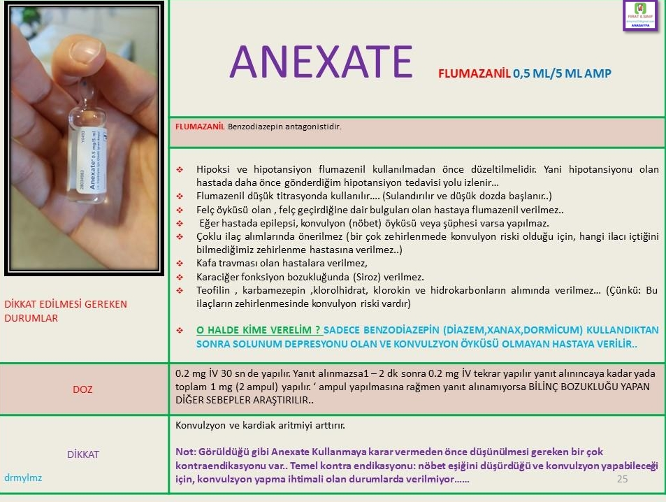

Anexate (Flumazenil)
- Benzodiazepin doz aşımının tedavisinde kullanılır.
- GABA-A reseptörlerine bağlanarak benzodiazepinlerin etkisini antagonize eder.
- Başlangıç dozu 0.2 mg IV, 15 saniyede uygulanır.
- Gerekirse 0.3 mg ve ardından 0.5 mg tekrar dozları verilebilir.
- Maksimum toplam doz genellikle 3 mg'dır.
- 


- Karma zehirlenmelerde (özellikle trisiklik antidepresanlarla) dikkatli olunmalıdır.
- Uzun süreli benzodiazepin kullanımı olan hastalarda nöbet riski nedeniyle dikkatle kullanılmalıdır.
- Nöbet
- Ajitasyon
- Bulantı
- Aritmi
- Diğer santral sinir sistemi depresanlarıyla birlikte kullanıldığında etkileşim gösterebilir.
- Trisiklik antidepresanlarla birlikte kullanımı hayatı tehdit edici aritmilere yol açabilir.